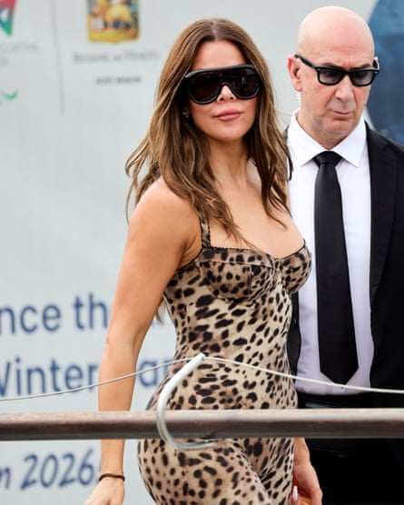
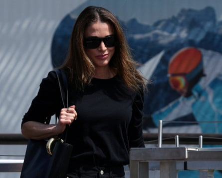
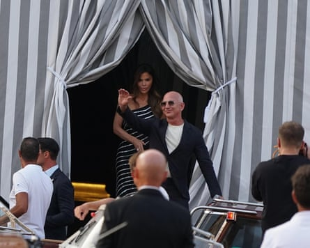
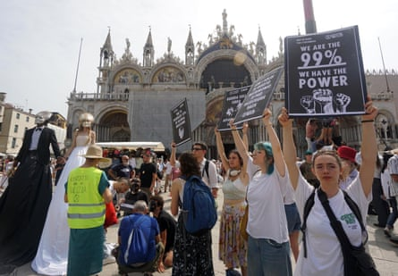
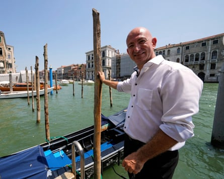
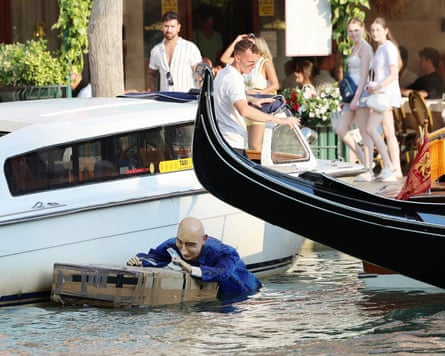

The world’s rich and famous have arrived in Venice as the three-day wedding bash hosted by the Amazon billionaire, Jeff Bezos , and his wife-to-be, Lauren Sánchez, gets under way amid protests in the lagoon city.
The US reality TV personalities Kim and Khloé Kardashian were spotted clambering into water taxis in stilettos, while Kris Jenner, Oprah Winfrey, Leonardo DiCaprio, Orlando Bloom and Jordan’s Queen Rania have also been seen.
Donald Trump’s daughter, Ivanka, was among the first of the 200 or so guests to arrive and has been spending the pre-wedding downtime sightseeing and shopping despite the stifling heat.
Khloé Kardashian is also on the guest list.Photograph: Matteo Chinellato/ipa-agency.net/Shutterstock
More than 90 private jets flew guests to Marco Polo airport for what has been described as “the wedding of the century”, while others have arrived on their super-yachts.
Bezos, the fourth richest person in the world, and Sánchez, a former TV journalist, kicked off the celebrations with a party on Thursday night in the cloisters of the Madonna dell’Orto, a 14th-century church in the Cannaregio area that is home to masterpieces by the Italian Renaissance painter Tintoretto.
By early evening, a bridge leading to the front of the church had been blocked off by private security guards while police stood close by, their six helmets balanced on riot shields.
Music blared and a small corridor of black screens helped guest arrive anonymously as they stepped off water taxis.
Among them was DiCaprio, wearing a dark baseball cap pulled low.
The Venice authorities have tightened security across the city, with pedestrians and water traffic banned from the area of Thursday night’s festivities from 4.30pm local time until midnight in an attempt to thwart protesters who had threatened to ruin the party.
Queen Rania of Jordan touches down in the lagoon city.Photograph: Guglielmo Mangiapane/Reuters
The nuptials are said to be costing €40m-€48m (£34m-£41m).
The bride and groom arrived in Venice by helicopter on Wednesday and have been lodging at the seven-star Aman hotel, where George and Amal Clooney stayed during their wedding in 2014. Rooms with a view of the Grand canal go for at least €4,000 a night.
The bride and groom to be, Jeff Bezos and Lauren Sánchez, outside the Aman hotel, where they are staying for the celebratory weekend.Photograph: Andrea Merola/EPA
The couple were seen leaving the hotel at around dinner time, with Sánchez wearing a vintage Alexander McQueen dress – one of 27 outfits reportedly packed for the occasion.
Cagdas Halicilar, a German professional Jeff Bezos lookalike, has been making the most of baffling the crowds as he posed for photos close to the Aman hotel and later headed over to the area where the party was under way.
Demonstrators, including a pair on stilts dressed as a bride and groom, gather in St Mark’s Square to protest against the wedding.Photograph: Andrea Merola/EPA
Protests have raged for weeks in the run-up to the wedding, which critics say threatens to turn the Unesco world heritage site , already swamped by millions of tourists each year, into a playground for the rich.
A professional lookalike of the Amazon founder Jeff Bezos, Cagdas Halicilar, soaks up the excitement.Photograph: Luca Bruno/AP
Luca Zaia, president of the Veneto region, said the couple had raised their donation to a project that studies the city’s lagoon system from €1m to €2m.
Bezos and Sánchez will reportedly exchange their vows on Friday at a black-tie ceremony on the tiny island of San Giorgio Maggiore, where they will be serenaded by Matteo Bocelli, the son of the famed opera singer Andrea Bocelli. The island is home to a basilica filled with artistic gems, including Tintoretto’s The Last Supper, an amphitheatre and a kilometre-long maze.
A mannequin resembling Jeff Bezos floats in a canal, as part of the protests against the billionaire hosting his wedding in the city.Photograph: Click News/AP
The main wedding reception is expected to be held on Saturday in the Arsenale, a historic complex of shipyards surrounded by fortified walls. The big party was supposed to take place in a 16th-century building in the centre of the city but was switched due to security concerns.
Over the coming days, the celebrations will reportedly include a pyjama party, a foam party and a Great Gatsby-theme event.